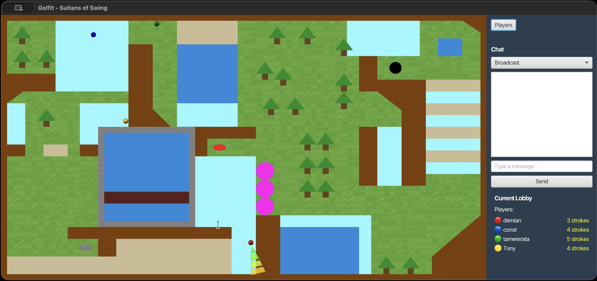

A multiplayer video game centered around the experience of minigolf. Developed at the University of Basel as programming project.
Get StartedGolfIt is built on a client-server architecture where communication is handled through a custom-made network protocol. It provides a fun golf game with an interactive environment, aiming to bring friends together for competitive minigolf action.
Watch a gameplay of the game.

A Screenshot of the dynamic game GolfIt.
Support for up to 6 players per lobby. Create or join lobbies and communicate via a real-time text chat.
Friction-based deceleration, wall bounces, and interactive elements such as trees, walls, and bridges.
Game state tracking with stroke counts and finish-time tie-breakers. Automatic and unique golf ball color assignment.
Visual cone-shaped power and direction indicator for intuitive stroke control.
A custom UDP-based protocol with reliable delivery for system and chat messages.
Powered by Java 25, JavaFX for the GUI, and Gradle as the build system.
Get started by downloading the source code from our repository. Building the project yourself ensures the correct graphical libraries are downloaded for your specific operating system (Windows, Mac, or Linux). Make sure you have Java 25 installed.